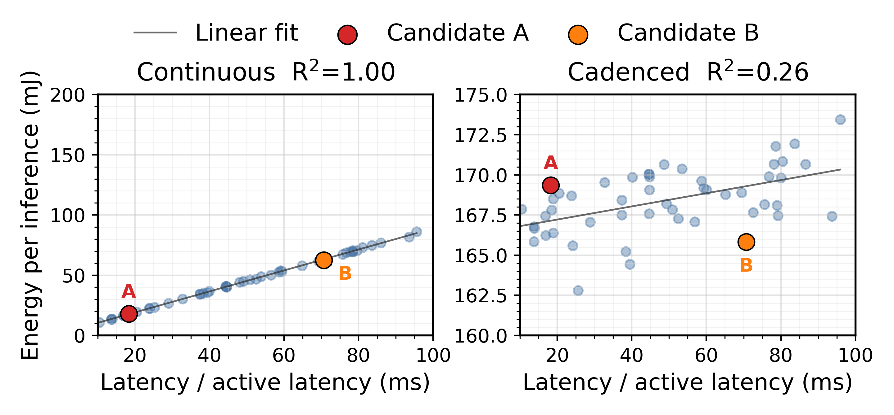
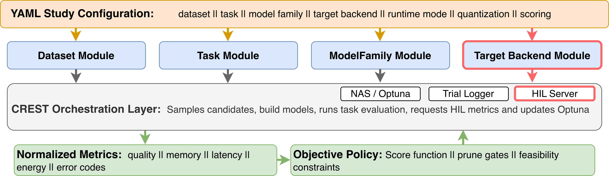
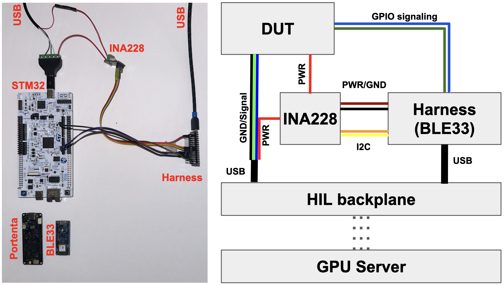
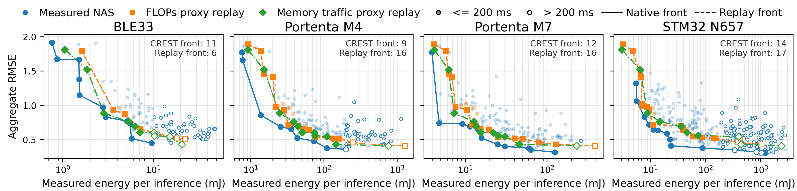
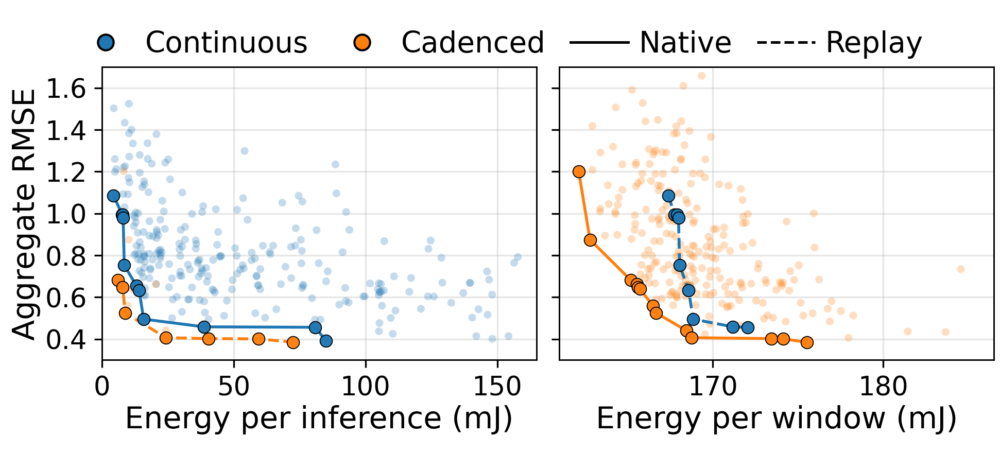
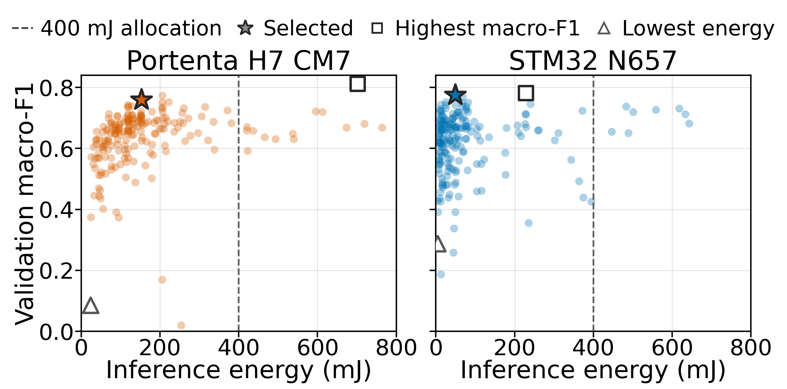
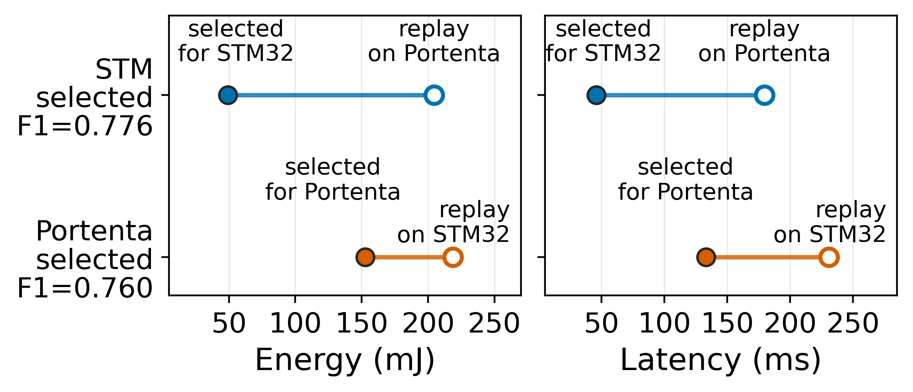

Configurable studies
Users select workload, model family, target backend, runtime schedule, quantization mode, and policy in a study configuration.
CREST is an open-source full search-and-measurement workflow for MCU sensing systems. Across OxIOD and UrbanSound8K case studies on Cortex-M boards, measured HIL search cuts odometry energy by 41.7% versus FLOPs-based selection, exposes memory-infeasible proxy choices, and shows that runtime schedule and board choice can change which architecture should be deployed.
Deploying neural networks on low-power microcontrollers (MCUs) requires selecting model architectures under tight memory, latency, and energy constraints. Existing workflows often simplify this process along one or more axes: static proxy costs such as FLOPs or parameters, treating one MCU as representative, and continuous-inference tests instead of deployed sensing schedules. These assumptions can mis-rank Pareto-front candidates, miss infeasible deployments, and obscure schedule-dependent energy.
We present CREST (Cross-platform Runtime Evaluation and Search Tool), a deployment-realistic hardware-in-the-loop (HIL) neural architecture search (NAS) framework for MCU sensing systems. CREST keeps the optimizer, HIL measurement boundary, logging, and replay workflow fixed while exposing workload, model family, target backend, schedule, quantization, and scoring policy as configurable axes. This makes deployment effects experimentally separable within one reusable workflow.
We evaluate CREST on inertial odometry and audio classification across three Arm Cortex-M targets. For inertial odometry, measured-energy HIL search reduces median per-inference energy by 41.7% versus FLOPs-based selection and 40.8% versus memory-traffic-based selection at similar error. FLOPs-based selection also chooses infeasible deployments on memory-constrained targets. On the STM32 N657 target, continuous-inference and duty-cycled searches produce different Pareto frontiers. For audio classification, the same application-level policy selects different DS-CNN architectures on different boards, and cross-board replay changes deployment cost substantially.
Overall, CREST shows that deployment-realistic MCU NAS must jointly optimize model architecture, target platform, runtime schedule, and deployment policy rather than relying only on static proxy costs or continuous-inference measurements.
Runtime schedule can change which architecture should be selected.
Current hardware-aware model-selection workflows often simplify deployment by using proxy costs, treating one measured platform as representative, or measuring continuous inference instead of deployed sensing schedules.
CREST exposes those deployment axes directly. In the STM32 N657 example, Architecture A uses less energy than Architecture B under continuous inference, but more energy when measured over the full 200 ms cadenced board-level window, including inference and the following wait or sleep interval.
The reversal matters because sensing latency is an active-time and deadline constraint, while deployment energy is integrated over the whole release window. A benchmark-style continuous-inference measurement can therefore select the wrong model for a duty-cycled sensing deployment.

CREST keeps the search loop, HIL boundary, replay path, and common metric fields fixed while deployment choices vary.
Users select workload, model family, target backend, runtime schedule, quantization mode, and policy in a study configuration.
Trials return task quality, proxy cost, memory, latency, energy, status, and backend-dependent cadence telemetry when available.
CREST supports continuous inference and cadenced sensing-window execution as search-time choices.
Replay reconstructs candidates from study logs and remeasures selected fronts across targets, schedules, and policies.
Policies use the same metric namespace for scalar scoring, Pareto exploration, pruning, and feasibility constraints.
CREST includes OxIOD TCN odometry, UrbanSound8K DS-CNN audio, float32/int8 PTQ, Nano 33 BLE Sense, Portenta H7 CM4/CM7, and STM32 N657 paths.
For a new study, a user changes the workload, model family, backend, runtime schedule, quantization mode, or scoring policy while the optimizer, HIL boundary, normalized logs, and replay path stay fixed. Logs keep successful measurements, pruned candidates, feasibility decisions, and failures in one schema, making replay and cross-study comparison auditable.
CREST turns deployment assumptions into configurable experimental axes.
CREST is a full search-and-measurement workflow for hardware-in-the-loop NAS, built to vary workload, model family, target backend, runtime schedule, quantization, and scoring policy while keeping the optimizer, measurement boundary, logs, and replay workflow fixed. That fixed path makes deployment effects experimentally separable, so differences in selected architectures can be attributed to the deployment variable being tested rather than to a rewritten pipeline.
| Related direction | Typical limitation for deployment studies | What CREST adds |
|---|---|---|
| Proxy and predictor NAS | Search uses operation counts, memory estimates, lookup tables, or calibrated predictors instead of measuring each deployment candidate. | HIL trials can report whether candidates build, fit, meet timing constraints, and consume energy on the selected board and schedule when supported by the backend and harness. |
| HIL NAS systems | Target interaction is valuable, but workload, target stack, runtime schedule, or measurement scope are often fixed design choices. | Workload, model family, backend, schedule, quantization, and policy are selected through one reusable workflow. |
| Embedded ML benchmarks | Benchmarks characterize models and hardware, but do not directly feed deployment-specific measurements into architecture selection. | Measured hardware metrics become optimizer feedback and replay evidence for controlled model-selection comparisons. |
This excerpt highlights the closest neural NAS, product, benchmarking, and estimator comparisons for CREST. The full table, including additional related systems, is available in the paper.
The table uses the paper's capability definitions. Measured targets means more than one real hardware target. HIL metrics means measured hardware metrics used during search or selection. Extensible tasks/targets means adding modules through reusable interfaces rather than rewriting a vertical pipeline. Yes marks a central capability in the reviewed artifact. Partial marks limited or indirect support.
| Work | Artifact type | Target scope | Availability | Automated search | Measured targets | Proxy metrics | HIL metrics | Extensible tasks/targets | Schedule options |
|---|---|---|---|---|---|---|---|---|---|
| CREST | Full tool | Multi-vendor MCUs | Open source | Yes | Yes | Yes | Yes | Yes | Yes |
| TinyOdom 2022 | Full tool | STM32 family | Open source | Yes | Yes | Yes | Yes | No | No |
| Edge Impulse 2023 | Product | MCU + CPU | Product | Partial | Yes | Yes | No | Yes | No |
| MicroNAS 2025 | Search stage | STM32 family | Available on request | Yes | Partial | Yes | No | No | No |
| EdgeMark 2025 | Benchmark | Multi-vendor MCUs | Open source | No | Partial | No | No | No | No |
| InstMeter 2026 | Estimator | Multi-vendor MCUs | No public artifact found | No | Yes | No | No | No | No |
A study configuration selects the workload, model family, target backend, runtime mode, quantization mode, and scoring policy.
CREST is laid out around swappable interfaces rather than one vertical workload pipeline. A study configuration selects the dataset, task, model-family, target-backend, runtime, quantization, and scoring components for one experiment.
Dataset, task, and model-family modules own the workload side of the study. The target-backend module owns vendor-specific compilation, flashing, telemetry, and power measurement. The orchestration layer connects those modules to NAS, HIL measurement, trial logging, normalized metrics, and the objective policy.
Policies decide whether a trial can stop after host metrics, proxy costs, resource reports, or pruning decisions, or whether it must cross the HIL boundary for compiled, flashed, measured feedback from the selected target.

At runtime, those pieces form a sample-evaluate-score loop. Optuna proposes a candidate, CREST builds and evaluates it, the backend measures it when HIL data are needed, and the policy returns task and deployment feedback to the optimizer.
Trial logs keep successful measurements, pruned candidates, feasibility decisions, and failures in the same metric schema. Replay reconstructs selected candidates from those logs and remeasures them across targets, schedules, and policies without retraining or rewriting the search pipeline.
CREST records board-level DUT supply energy by powering the device under test through an off-the-shelf INA228 monitor. A separate harness MCU reads power telemetry over I2C while observing DUT GPIO markers.
GPIO markers define the measurement window, attaching each energy value to a specific candidate, runtime schedule, and trial outcome without manual trace segmentation.
The reported setup uses a 15 milliohm shunt and 64-sample averaging. The harness resets the INA228 energy accumulator at the start marker, reads accumulated energy at the end marker, normalizes by completed invocations, and accepts coordinated DUT-plus-harness trials only when DUT timing, harness completion, and run counts agree.

CREST exposes model-selection differences hidden by proxy-only, single-target, and single-schedule workflows.
Case Study 1
Case Study 1 holds the workload fixed to OxIOD inertial odometry and the model family fixed to TCN architectures, then changes the selection policy and target backend. CREST compares FLOPs-proxy and memory-traffic-proxy NAS runs against measured-energy HIL NAS on Nano 33 BLE Sense, Portenta H7 CM4, Portenta H7 CM7, and STM32 N657.
The replay view matters because candidates selected by cheap static objectives are compiled, measured, and compared against the measured-energy front on each target. This separates model quality from whether the cost signal actually ranks deployable MCU candidates correctly.
Static proxies miss deployment reality in two ways. FLOPs can select candidates that are invalid on memory-constrained targets, and even the valid proxy fronts are mostly beaten after measured HIL replay.

Case Study 2
Case Study 2 keeps the STM32 N657 backend, OxIOD task, TCN model family, search space, and HIL path fixed while changing only the runtime schedule and objective. The continuous run optimizes per-inference energy, while the cadenced run uses a representative 200 ms sensing period and optimizes energy over the full scheduled window.
CREST then replays each selected frontier under the other runtime. This tests whether benchmark-style continuous inference is a reliable stand-in for a duty-cycled deployment where the board executes inference, waits or sleeps, and reports deadline and window-energy telemetry.
Changing from active-inference measurement to a 200 ms cadenced sensing window changes which models are Pareto-optimal. The runtime schedule is a model-selection input, not just a reporting choice.

Case Study 3
Case Study 3 switches workload, task metric, model family, target backend, and selection policy. CREST runs prepared-feature UrbanSound8K audio classification with a DS-CNN search space and a scalar application score that trades validation macro-F1 against measured inference energy.
The example policy classifies one prepared log-mel feature window every 2 seconds during a 72 hour session and allocates 400 mJ of the window to classifier inference. The budget and penalty are policy choices, so CREST can rescore completed trials and replay selected models across boards without rebuilding the search pipeline.
A deployment policy selects different prepared-feature audio models for Portenta and STM32. Maximizing validation F1 alone leaves substantial measured energy on the table, and the chosen architecture does not transfer for free across boards.


CREST includes study configurations, workload/model modules, backend integrations, HIL logging, and replay support for OxIOD inertial odometry and UrbanSound8K prepared-feature audio classification. The evaluated backends cover Arduino Nano 33 BLE Sense, Arduino Portenta H7 CM4/CM7, and STM32 N657.
Start without hardware by running training-only and proxy studies, then inspect logs or rescore completed trials. With supported boards, replay selected candidates and collect target-specific latency, memory, and feasibility results. Full measured-energy HIL NAS requires the target boards, vendor toolchains, and CREST's INA228-based harness because energy is collected from real devices under the selected runtime schedule.
Full HIL NAS runs in the paper take about 17-35 hours per board. That cost is why CREST keeps the optimizer, measurement boundary, logging format, and replay path fixed across studies that vary only the intended deployment axis.
Good extension projects include adding a new sensing workload, integrating another MCU backend, testing a different duty cycle, or training predictors from CREST's HIL logs to reduce future search cost.
The public code repository: https://github.com/nesl/crest.